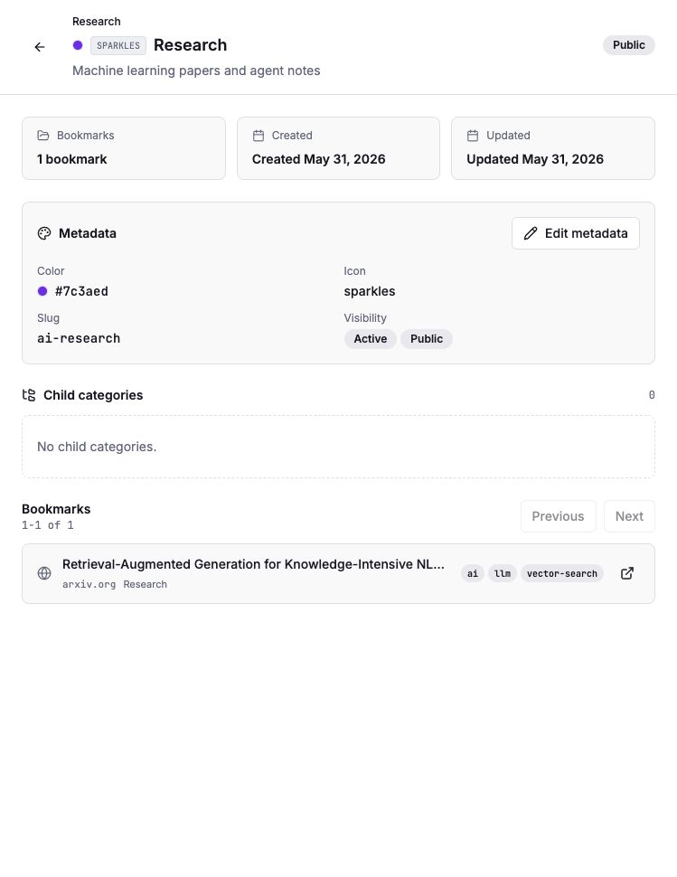
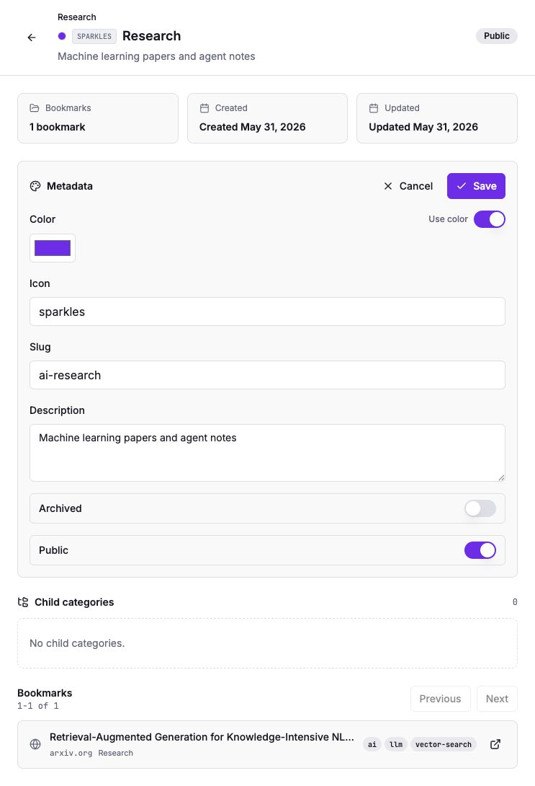
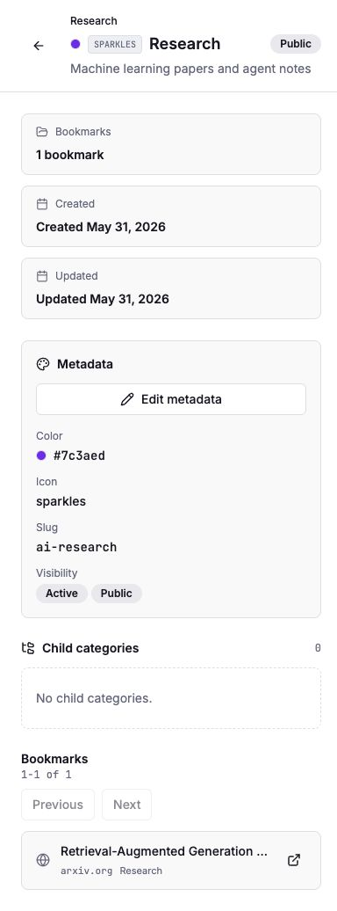

Grimoire Task Report
Category Metadata Fields

Before
Categories persisted only a name, parent, timestamps, and bookmark count. The detail page could show hierarchy and scoped bookmarks, but it had no place to store or edit color, icon, description, slug, archived state, or public visibility metadata.
Problem
TASK-097 needed Grimoire parity metadata without changing Little Imp's loopback-only, local-first security posture. The public visibility field had to remain ordinary local metadata, not a sharing feature or network exposure switch.
Changes Added
- Added append-only migration
0013_category_metadata.sqlwith category color, icon, description, slug, archived flag, and public flag columns. - Added unique slug persistence, repository create/update support, and category tree response propagation.
- Added daemon request validation for hex colors, icon tokens, slugs, and 0/1 metadata flags.
- Updated the daemon-owned API contract plus generated
API.mdanddocs/api-contract.json. - Extended frontend API/category types and sidebar category rows to carry color and icon metadata.
- Added category detail rendering for description, slug, color, icon, active/archived state, and public/private state.
- Added a compact category metadata editor on the detail page with color, icon, slug, description, archived, and public controls.
Result
Metadata
Category metadata now survives create/update flows and is visible in the detail surface without adding clutter to library browsing.
Visibility
The public flag is stored and displayed as local metadata only. No route, bind address, CORS behavior, or sharing behavior changes were added.
Verification
bun test daemon/src/test/category-repository.test.ts daemon/src/test/integration/categories.test.tspassed.npx vitest run src/pages/CategoryDetail.test.tsxpassed.npm run docs:apiregenerated the API contract and markdown docs.npm run docs:api:check,npm run lint,npm run type-check,npm test,npm run test:daemon, andnpm run buildpassed.npm run test:e2epassed with 19 tests after restarting Playwright with its own mock-daemon dev server.- Browser visual verification used an isolated seeded daemon on
127.0.0.1:33210and Vite on127.0.0.1:8080. - Desktop view, edit form, and mobile/narrow state were captured and inspected for text fit and overlap.
Additional Screenshots


Implementation Notes
The metadata fields are intentionally scoped to category storage and category API responses. Archived category state does not hide bookmarks or categories yet, and public visibility does not publish data. Future behavior can be added behind separate task-specific requirements.
Files Changed
daemon/src/db/migrations/0013_category_metadata.sqldaemon/src/db/types.tsdaemon/src/db/category-repository.tsdaemon/src/routes/categories.tsdaemon/src/api/contract.tssrc/lib/api.tssrc/hooks/use-bookmarks.tssrc/components/AppSidebar.tsxsrc/pages/CategoryDetail.tsxAPI.mddocs/api-contract.json